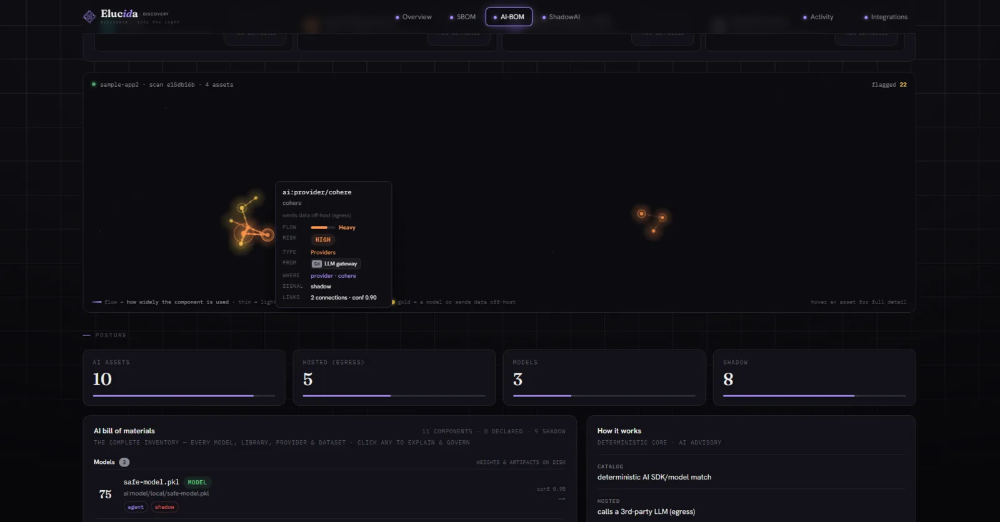

See everything you run.
SBOM, AI-BOM and Shadow-AI on one confidence-scored asset graph. Every software component, every model, and every unsanctioned AI nobody told you about — dragged into the light across seven discovery surfaces.
The Command Center — one posture score, cross-product KPIs, ranked top-risks and a streaming activity rail, auto-refreshing.
Confidence rises as surfaces
corroborate the same asset.
Find the AI nobody sanctioned
A host sensor, gateway, DNS logs and dependency scans all watch for AI. When several surfaces agree — "code imports @anthropic-ai/sdk" + "agent: outbound to api.anthropic.com" — the asset is confirmed, with the real evidence attached.
- 7 surfaces: code · model · network · cloud · SaaS · host-agent · runtime gateway
- Shadow → shadow account: captures the credential identity behind each call (sanctioned / personal / unsanctioned)
- Raw keys never stored — only a SHA-256 fingerprint
The complete, categorized inventory
Every AI component by type — models, libraries & SDKs, hosted providers, datasets — each with declared/sanctioned/shadow status, EU AI Act tier, risk, and the evidence behind it. ShadowAI is simply the unsanctioned subset.
- Explainable findings: what, where, why (CVSS · EPSS · KEV · CWE), and the exact upgrade command
- Override & VEX decisions persist across every future scan
- Deterministic-first: purl/CVE matching and opcode scanning; ML only advisory

The major kit
Command Center
A single 0–100 posture score (A–F grade) from real risk signals — critical vulns, shadow egress, blind spots, open alerts.
Environment map
Seven surfaces → the AI they reveal, with live traffic flow. Dark surfaces are visible blind spots you can close.
SBOM ensemble
Syft generation + OSV/Grype/Trivy ensemble matching + licenses + supply-chain risk + VEX, in a hardened no-egress sandbox.
One fleet token
Host agent rolls out via curl · Docker · K8s DaemonSet · Terraform · Ansible · SSM · Intune — and re-enrolls on IP change.
Connector catalog
Faceted by product × surface, live health, test-connection, GitHub fine-grained PAT with auto-rescan on push.
Deploy anywhere
Helm profiles for SaaS · on-prem · BYOC · air-gapped, with an offline OSV/EPSS/KEV feed bundle.